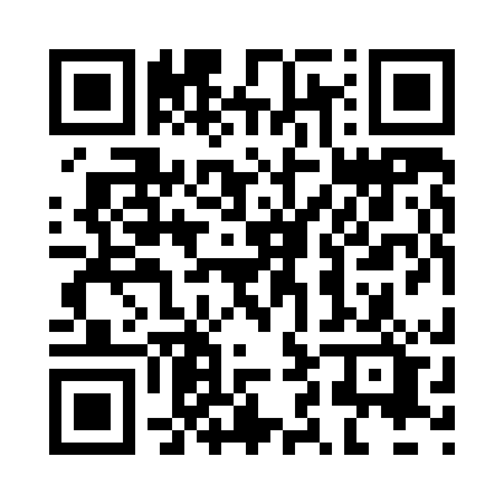

Canva未反映の掲載案：相対位置と絶対位置の比較。原本の配置・収まりは編集権限取得後に調整。
05結果・評価
11月1日10:15から60秒間、平均深度16.44 mで静止評価を行った。
親子相対位置：姿勢補正後の3D RMSE
0.1397 m
親機姿勢固定 1.4545 mから 90.4%減少
同じ採用32点の区間平均まわりRMSE。真値誤差ではない。
深度は水圧換算の未校正相対値。開始約14秒は測距前の欠測。
子機絶対位置：PPK方式の比較
11月1日10:15から60秒、平均深度16.44 m、同じ採用32点。
姿勢補正あり・絶対位置の3D RMSE
0.2031 → 0.0865 m
通常PPK → Float設定PPK（57.4%減）
区間平均まわりのばらつきで、真値誤差ではない。GNSSと相対幾何の共分散を含む。同じ静止窓で方式を選定しており、独立データによる精度検証ではない。
親機姿勢固定では通常PPK 1.3116 m → Float設定PPK 1.3604 m。全条件でFloatが小さくなるわけではない。
全6窓の比較表（絶対位置・姿勢補正あり）
| 日時 JST | 深度 m | 点数 | 通常 m | Float m |
|---|---|---|---|---|
| 10/31 14:41（探索選定） | 6.38 | 83 | 0.1985 | 0.1985 |
| 10/31 15:03 | 4.78 | 170 | 0.2213 | 0.1763 |
| 11/01 09:56 | 14.66 | 30 | 0.5658 | 0.2833 |
| 11/01 10:15 | 16.44 | 32 | 0.2031 | 0.0865 |
| 11/01 10:20（手動揺動） | 16.46 | 18 | 0.3674 | 0.3157 |
| 11/01 10:32 | 6.54 | 52 | 0.4830 | 0.4830 |
深度は子機の水圧換算値。手動揺動窓は静止申告窓と区別する。
水中マップ・手法・レポート
5区間の写真付き水中マップ。
スマホで回転・拡大して閲覧できる。
尺度・配置は暫定。精度と日をまたぐ接続は未検証。
QRから研究の詳細へ →
aquabeacon.github.io/map/

06今後の展望
既知の位置・距離・物体寸法を用いて測位と地図の精度を検証する。再訪時の地図接続、光源追跡の欠測低減、同期・校正の改善を進め、藻場調査への応用を目指す。